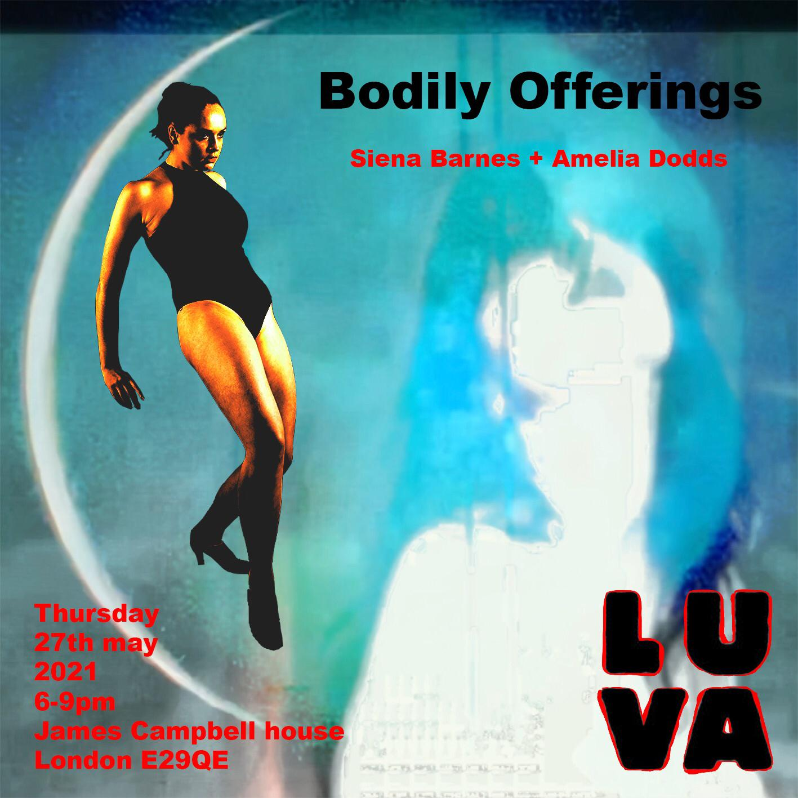

Bodily Offerings
A collaboration between Siena Barnes and Amelia Dodds
6-9pm Thursday 27th May, at LUVA Gallery
Book your free timeslot HERE!

The collaborative exhibition ‘Bodily Offerings’ features artists Siena Barnes and dancer Amelia Dodds,
exploring the living and writhing female body.
Siena Barnes grew up in Bermondsey, South London. Siena shows a collection of mixed media works from her
recent collection 'The Night Star'.
'The Night Star', presents a series of talismans dedicated to the ancient Babylonian journey, a
downward-spiraling voyage into the Great Below known as ‘The descent of Inanna’, the first recorded
description of Katabasis.
Joined by Amelia Dodds, a Yorkshire-born dancer inspired by the choreography of Bob Fosse, his nuances and
allusion to promiscuity, compared to the more explicit movements in Commercial dance, today. Amelia uses
numerous photos to capture a single movement or change in the body. These images help her to examine, in
detail, an action that cannot be translated into a single image. Her works in Bodily Offerings will be a
combination of printed photographs and a live performance, that focuses on ‘small changes within the
movement’, including ‘repetitions to highlight the pelvis and head alignment’.
Siena Barnes


Siena Barnes grew up in art studios and galleries in Bermondsey in South London. Her 'art has changed beyond
recognition over the last year', moving away from 2D drawings and exploring new media, such as film and 3D
printing. Siena will show a collection of mixed media works from her recent collection The Night Star.
'In The Night Star, I present a series of talismans dedicated to the ancient Babylonian journey, a
downward-spiralling voyage into the Great Below known as ‘The descent of Inanna’, the first recorded
description of katabasis.
In the myth, the whore-goddess Inanna, the queen of heaven, must let go of her divinity, sovereignty and
power and submit to her enemy, only to discover at the story’s end that she and her opponent are one flesh.
No-one returns from the underworld unscathed.
My talismans are fetishes dedicated to the depths of human experience. They offer us a reminder to meet the
monsters of me, to own our own darkness. They celebrate the night star, Venus, traditionally aligned with
the sin of lust and alchemised by beauty and draw down the astral energy of love.
The works presented in The Night Star originate from my temple dancer/ stripper movie, Pray For Me, a
meditation on a time before guilt and shame played such an intrinsic, and in my view destructive, role in
sexuality.'
Interview with Siena
Amelia Dodds


Amelia Dodds is a Yorkshire-born dancer inspired by the choreography of Bob Fosse, his nuances and allusion
to promiscuity, compared to the more explicit movements in Commercial dance, today.
'His feet and knees slightly turn inwards, which he discovered gives his hips are wider range of movement
when they’re in that position. You can see that in a lot of his choreography, a lot of his pieces have those
same movements. And, he loves the splayed hand as well, which is quite interesting as that frames different
parts of the body.
Amelia uses numerous photos to capture a single movement or change in the body. These images help her to
examine, in detail, an action that cannot be translated in a single image. Her works in Bodily Offerings
will be a combination of printed photographs and a live performance, that focuses on 'small changes wothin
the movement', including 'repetitions to highlight the pelvis and head alignment'.
'I will observe and compare the different responses to the same performance, one being live and the other
being a documentation of the dance. I am hoping that by performing on an unconventional ‘stage’, I will be
able to engage with an audience that may have different expectations of what dance can be.'
Book your free timeslot HERE!